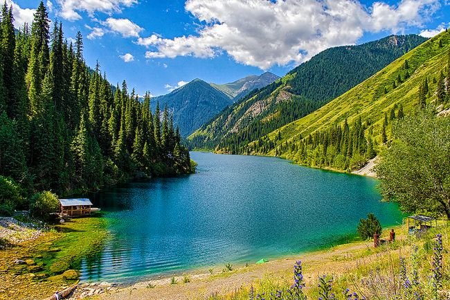
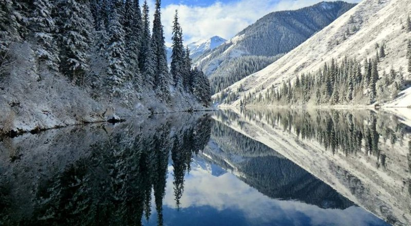
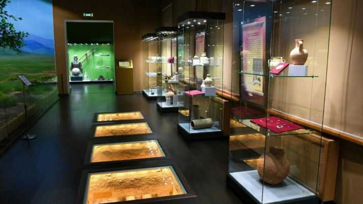

Алматы
Алма-Ата, или Алматы — город республиканского значения и крупнейший населённый пункт Республики Казахстан, бывшая столица Казахстана (до 1997), Казахской ССР (в составе СССР), Казахской АССР (в составе РСФСР). По данным на начало 2020 года население города — 1 916 822 человек. Алма-Ата по праву считается культурным центром республики. В Алма-Ате имеется 270 организаций культуры. В том числе 10 театров , 7 концертных залов, филармония, 11 оркестров, 13 ансамблей. В Алма-Ате действуют 32 музея, 20 художественных галерей, 39 библиотек, 2 Дома детского творчества. 115 памятников истории, архитектуры и монументального искусства. Работают 18 кинотеатров, цирк, 920 спортивных сооружений, множество ночных клубов, ресторанов и других развлекательных заведений. В Алма-Ате расположена крупная киностудия «Казахфильм», а также другие малые частные студии кинопродакшена.
Мы хотим предоставить вам список мест, которые вы можете посетить в городе Алматы:
1. Алтын-Эмель Алтын-Эмель – национальный природный парк, расположенный в долине реки Или на территории Казахстана. Парк был основан 10 апреля 1996 года с целью сохранения уникального природного комплекса, археологических и историко-культурных памятников, редких и исчезающих видов растений и животных. На территории парка общей площадью 520 тыс. га можно встретить различные ландшафты: горный, песчано-пустынный, щебнистые, пустынные. Флора парка насчитывает около 1800 видов растений, среди них 21 вид занесён в Красную книгу Казахстана, около 60 видов являются редкими формами, которые встречаются лишь на территории Джунгарского Алатау и в бассейне реки Или и озера Балхаш. Из обитающих в парке животных 56 видов считаются редкими, занесенными в Красную книгу Казахстана, среди них архар, кулан, джейран. На территории парка расположено немало уникальных природных и исторических объектов, имеющих важное значение: самым известным из них является уникальное явление природы – дюна Поющий бархан, длиною 1,5 км и высотой до 120 м. Бархан имеет форму полумесяца, что делает его красоту уникальной. Когда ветер дует с запада, разгоняя пески, создаётся ощущение, что в сердце пустыни играет орган. До сих пор это явление остаётся загадкой природы, но ученные предполагают, что в сухую жаркую погоду, песок с помощью трения электризуется и создаёт определённую звуковую вибрацию. Никто, хоть раз слышавший пение бархана, не забудет это явление никогда.
2. Большое алматинское озеро Расположенный всего в 15 км от центра города объект, в простонародье БАО, – это, пожалуй, самая популярная и любимая достопримечательность не только гостей города, но и самих алматинцев. Красота водоема в равной степени обуславливается как лазурными водами озера, так и окружающими его высокогорными пиками – пик Советов виден к юго-востоку от озера, Озерный – на юге и пик Турист – на юго-западе. Зимой озеро надежно замерзает, что не так давно доказала алматинская фигуристка Ксения Панкратова, которая прокатилась по БАО на коньках и выложила видео в Сеть, чем вызвала возмущенные реакции пользователей и повышенное внимание со стороны правоохранительных органов. Летом, при удачном отсутствие запрещающих проход пограничников, к водоему можно подойти вплотную и омыть руки в прохладной водичке.
3. Каток и Горнолыжный курорт Медео Крупнейший в мире высокогорный спортивный комплекс «Медеу» расположен в одноименном урочище Заилийского Алатау вблизи Алматы на высоте около 1700 метров над уровнем моря. От разрушительного воздействия селевых потоков «Медеу» защищает одноименная плотина, построенная в конце 1960-х годов и расположенная к югу от катка. Специальное водовместилище позволяет удерживать здесь около 6 миллионов кубических метров воды, а на лестнице, ведущей к плотине и состоящей из 842 ступеней, регулярно проводятся соревнования по восхождению на скорость. В «Медеу» было установлено более 120 мировых рекордов. Ледовый каток Медео, расположенный на высоте 1691,2 метра над уровнем моря, известен всему миру. Он был возведен в 1972 году. Поверхность льда занимает 10,5 тысяч кв.м, что позволяет проводить соревнования по конькобежному спорту, хоккею и фигурному катанию. Мягкий климат в ущелье, оптимальной уровень солнечной радиации, невысокое атмосферное давление, слабый ветер и чистая ледниковая вода – все это обеспечило высокогорному катку широкую популярность. Более 170 мировых рекордов было установлено здесь известными спортсменами. За последние годы каток усовершенствовался после проведенной модернизации. Горная долина была названа именем Медео, кочевника проживавшего в прошлом веке и разбившего свой аул в этих живописных местах.
4. Кольсайские озера Популярным местом в Алматинской области являются пресноводные Кольсайские озера, что расположились в пределах Северного Тянь-Шаня. Кольсайские озера – одно из красивейших мест казахской природы. Их еще называют голубым ожерельем Северного Тянь-Шаня. Оно и понятно – такую красоту встретишь не везде! В переводе с казахского языка ”кольсай” означает “озеро в ущелье”, потому что все три озера находятся в живописнейшем ущелье восточной части хребта Кунгей Алатау, что в 300 км от Алматы. Озера расположены на высоте 1800, 2250 и 2700 над уровнем моря. Река Кольсай берет свои истоки с ледников, расположенных на горных хребтах Кунгей-Алатау, и впадает по очереди в три озера: Верхнее, Мынжолки и Нижнее. Вода в озерах пресная. Кольсайские озера очень глубоки. Например, самое глубокое место в первом озере - 80 м., а во втором – около 50 м. Дно местами пологое, без скальных выступов. Кольсайские озера – это излюбленное место для горных туристов. Треккинги на Кольсайские озера очень легкие и подойдут даже для непрофессионалов. Кроме того, Кольсай - это замечательное место для пикников на природе и катания на лошадях и горных велосипедах. Комфортным для кемпинга является период с апреля месяца до конца сентября.
 
5. Музей Алматы Музей Алматы основан в 2002 году, в здании бывшего Верненского детского приюта. В 11 залах хранится целая история города Алматы: попав сюда, вы откроете для себя разные эпохи южной столицы: «Древняя история Алматы», «Средневековая история Алматы», «У истоков казахской государственности», «Верненский период истории Алматы», «Алматы в ХХ веке» и другие. Музейные коллекции насчитывают около 35 тысяч экспонатов. Среди них — произведения изобразительного искусства, уникальные собрания казахской этнографии, а также этнографии представителей народов, проживающих ныне в Алматы, коллекции предметов быта различных эпох и культур, нумизматики, фото и документов.
